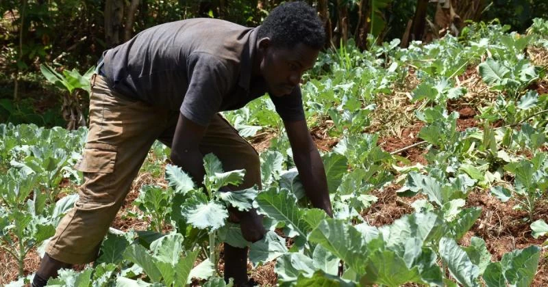
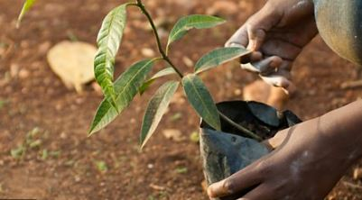

Programs and Initiatives

1. Rehabilitation & Empowerment
Our flagship program focuses on rehabilitating individuals struggling with drug addiction. Through counseling, vocational training, and employment opportunities, we empower them to rebuild their lives and contribute positively to society.

2. Sustainable Kitchen-Garden Program
We're committed to enhancing food security and promoting healthy eating habits. This program empowers community members to create kitchen gardens, ensuring access to fresh produce and encouraging self-sufficiency.
3. Awareness Campaigns
Our campaigns address critical issues like drug abuse, crime prevention, and health awareness. We engage the community through workshops, seminars, and events, fostering informed decision-making and behavior change.

4. Tree-Planting Initiative
Taking steps to combat climate change, we organize tree-planting drives that contribute to a greener environment. This initiative aligns with our vision of holistic community development.
5. Empowerment Workshops
Through workshops, we equip youth with life skills, vocational training, and educational support, enabling them to pursue brighter futures and break free from the cycle of poverty and addiction.

6. Youth Sports and Activities
Our youth-focused programs include soccer tournaments, cultural events, and arts workshops, providing a platform for talent development, teamwork, and positive recreational activities.
7. Renewable Energy Solutions
We're at the forefront of embracing renewable energy solutions, such as briquetting technology and solar installations, to create a sustainable future and reduce environmental impact.
8. Community Resource Center
In our long-term vision, we plan to establish a resource center that offers educational resources, vocational training, and recreational facilities, fostering personal growth and community development.
Conclusion
These programs and initiatives showcase our commitment to addressing various community needs comprehensively, promoting positive change, and creating a brighter future for all through Maisha Mtaani.